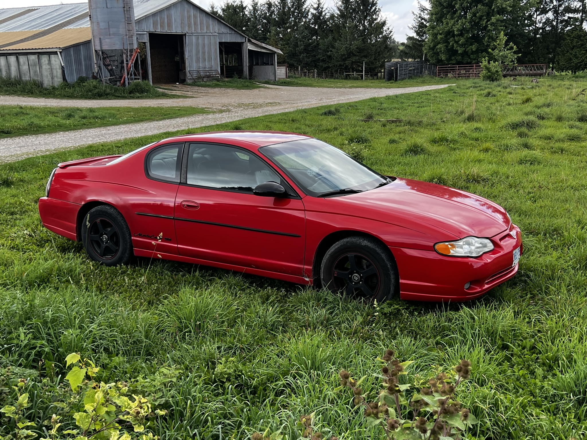
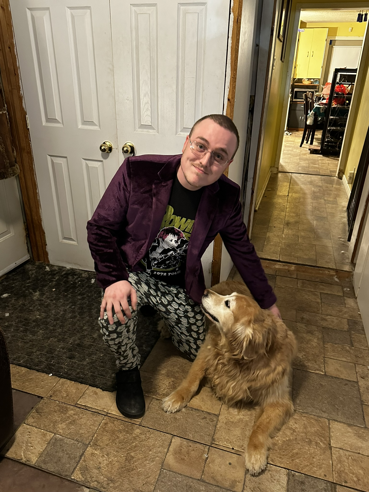
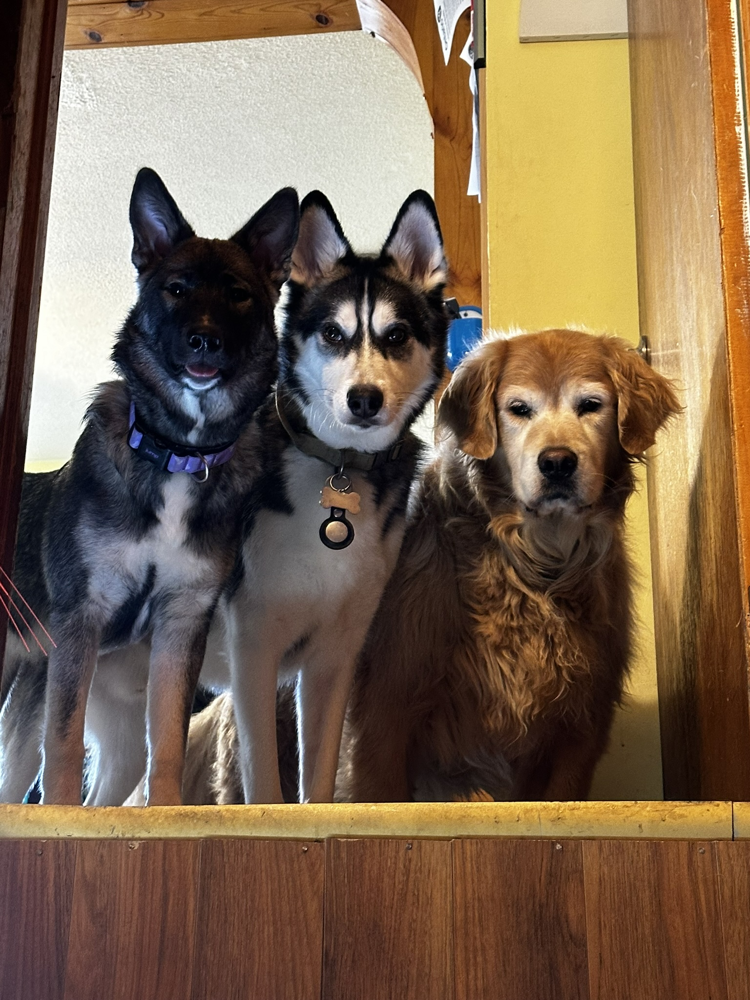

HueyOS
On‑robot runtime, governance model, memory systems, and how the AI stack is wired into the physical shell.
HueyOS is a modular AI runtime that runs entirely on local hardware inside a wooden robot shell, orchestrating GPUs, retro hardware, and a constitutional governance model. There is no cloud dependency—the intelligence lives in the room with you.
This site tracks the Monkey‑Head‑Project, side builds like PlayStation Ultimate, and the lab hardware that makes Huey possible.
This is the home for my long‑term personal lab work: HueyOS, the Monkey‑Head‑Project, and a rotating cast of hardware builds and retro experiments. It’s a working notebook, not a polished product page.
Inside you’ll find high‑level architecture notes, governance experiments, hardware logs, and the occasional gallery of in‑progress photos when I remember to take them.
On‑robot runtime, governance model, memory systems, and how the AI stack is wired into the physical shell.
The other builds that orbit HueyOS: PlayStation Ultimate, arcade cabinets, storage experiments, and more.
Who I am, why this project exists, and the guiding principles behind HueyOS and the Monkey‑Head‑Project.
A small sample of the physical build. The real gallery goes deeper, but this gives a sense of the vibe.



